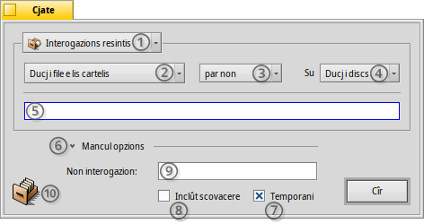
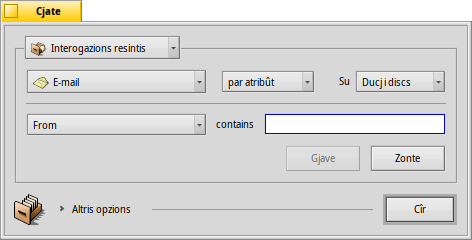
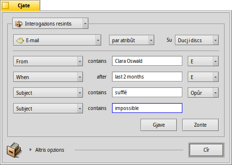
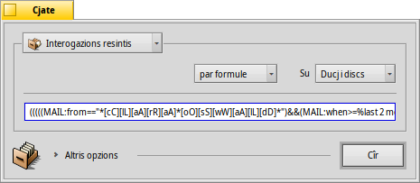
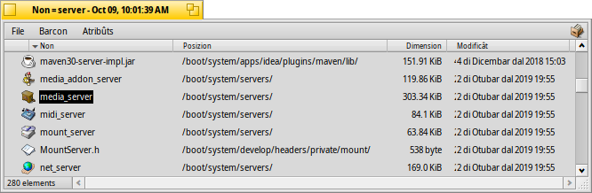

| Tabele |
|
Il barcon Cjate Interogazions di base - "par non" Interogazions avanzadis - "par atribût" Interogazions ancjemò plui avanzadis - "par formule" Il barcon dai risultâts Modei des interogazions |
Interogazions
Une interogazion e je une ricercje di file basade sui atribûts dai file e e pues jessi fate di dentri Tracker o intal Terminâl. Lis interogazions a vegnin salvadis su /boot/home/queries/ e, come impostazion predefinide, a durin siet dîs prime di jessi eliminadis. Fâs câs che lis interogazions no son listis di risultâts statichis de tô ricercje, ma a son lis formulis de interogazion che ti daran fûr un gnûf risultât ogni volte che tu lis vierzis.
Ancjemò miôr, no tu âs di fâ dopli clic par tornâ a eseguî une interogazion. Tu puedis sgarfâ jù intune interogazion salvade, tant che cualsisei cartele, fasinti un clic diestri e navigant cui sot-menù.
 Il barcon Cjate
Il barcon Cjate
Tu iniziis une interogazion clamant la vôs dal menù , sedi dal menù dal Deskbar, o di cualsisei barcon Tracker, o dal scritori (che a dile dute al è un barcon Tracker a plen visôr). La scurte e je ALT F. Ti si presentarà il barcon di Cjate:
Selezione lis interogazions resintis o salvadis, opûr salve i parametris de ricercje atuâl come Model di interogazion.
Strenç la ricercje di a specifics gjenars di file.
- Definìs il metodi di ricercje:
- - une ricercje di base par non di file o non di cartele
- - une ricercje avanzade, tu specifichis i tiermis di ricercje par un o plui atribûts
- - une ricercje ancjemò plui avanzade, tu puedis regolâ di fin un tiermin di interogazion complès
Selezione in cualis unitâts lâ a cirî.
Inserìs il tiermin di ricercje.
La freciute e mostre/plate lis opzions adizionâls.
Gjave la selezion ae casele se no tu desideris che cheste interogazion si auto-elimini dopo 7 dîs.
Segne la casele se la interogazion e varès di includi la scovacere te ricercje.
Come opzion, inserìs un non par cheste interogazion se tu desideris salvâle.
Tu puedis strissinâ e molâ la icone dulà che tu vûs, par salvâ une interogazion. Fasint la stesse robe cul boton diestri dal mouse, ti ven dade la pussibilitât di salvâ come model.
Interogazions di base - "par non"
Se tu desideris cjatâ juste ducj i file e lis cartelis sui tiei discs montâts cha a corispuindin a un specific model, al baste lassâ il metodi di ricercje su , inserìs il tiermin di ricercje tal ricuadri di test e frache INVIE.
Interogazions avanzadis - "par atribût"
Tu puedis creâ interogazions plui avanzadis cirint tra i atribûts dai specifics gjenars di file. Par che al funzioni, chescj atribûts a scugnin jessi metûts in tabele.
Si tache stabilint il gjenar di file cambiant di a, par esempli, e dopo tu cambis il metodi di ricercje in .
Chest al zonte un menù a tende a çampe dal ricuadri di test e, sot dal ricuadri, al zonte i botons e . Dal menù tu sielzis cuâl atribût interogâ. Cun e tu puedis interogâ plui atribûts o tornâju a gjavâ. Chescj atribûts a puedin jessi colegâts in maniere logjiche cu lis funzions AND/OR (E / O par furlan).
Fasin un esempli cuntune interogazion di e-mail:
Chest al è il to barcon Cjate cuant che tu stâs cirint dutis lis e-mail che Clara Oswald ti à inviât tai ultins doi mês e che a àn come ogjet "sufflé" o "impossible".
Tu puedis viodi che la ricercje a mieç di atribûts basâts sul timp e supuarte cualchi utile frase: sore a "last 2 months" (ultins doi mês) , tu puedis ancje doprâ "today"(vuê), "yesterday"(îr), "Monday"(Lunis) or "last Monday" (Lunis passât) (che al sarà il Lunis de setemane passade), o "last 2 minutes/hours/days/weeks" (ultins/ultimis 2 minûts/oris/dîs/setemanis).
E je une buine maniere par taiâ vie tancj risultâts di ricercje.
Interogazions ancjemò plui avanzadis - "par formule"
Scrivi une formule di interogazion a man al è un lavôr avilent e une vore pôc pratic. Ma al à ancje i siei motîfs.
Cjape la interogazion par atribûts di prime, chê des mail di Clara che a vevin a ce fâ cui vibrafons e vie indenant. Se tu âs stabilît ducj i atribûts e i lôr tiermins di ricercje, prove a passâ ae modalitât e ven cjapât de maravee di cheste ugnule stringhe di interogazion:
Ancjemò une volte come test, modificât pe facilitât di leture:
(((((MAIL:from=="*[cC][lL][aA][rR][aA] [oO][sS][wW][aA][lL][dD]*")
&&(MAIL:when>=%2 months%))
&&(MAIL:subject=="*[sS][uU][fF][fF][lL][éÉ]*"))
||(MAIL:subject=="*[iI][mM][pP][oO][sS][sS][iI][bB][lL][eE]*"))
&&(BEOS:TYPE=="text/x-email"))
Ce utilitât aie?
Tu puedis copiâ la stringhe e tacâle intune e-mail, forum o IRC par fâle doprâ a altris o par fâ un debug.
Tu puedis doprâ chest metodi par costruî une interogazion in modalitât e dopo passâ ae modalitât , par gjenerâ in mût facil une stringhe di ricercje. Sierade tra virgulutis singulis, chê stringhe e pues vignî doprade cul comant query tal Terminâl.
Tu puedis rifinî la to interogazion inserint parentesis dulà che a coventin, rindi parts sensibilis aes maiusculis/minusculis o neâ cumbinazions logjichis cambiant p.e. "==" in "!=" par un NOT AND. Dut ce che ti covente e je une comprension di base des espressions regolârs e magari cualchi nozion di base su ce mût scrivi i script.
Il barcon dai risultâts
Dopo che tu âs tacât une ricercje, il barcon Cjate al ven sostituît di un barcon cui risultâts. Achì si à un esempli che al à interogât "server":
In plui di vê un fonts grîs, i barcons dai risultâts a funzionin juste come cualsisei altri barcon di Tracker. E vâl la pene notâ cualchi robe:
Tu puedis vierzi la posizion di un file o cartele fasint dopli clic sul so atribût posizion.
Cun o ALT G tu tornis al barcon Cjate par rifinî la tô interogazion.
Une interogazion e je vive, vâl a dî che se un file, che al corispuint al criteri di ricercje, al ven fûr o al sparìs dal sisteme, cheste modifiche si riflet tai risultâts in timp reâl.
Tu puedis assegnâ une disposizion di un atribût particolâr pai risultâts di une ricercje di un specific gjenar di file. Vierç une cartele che e conten i file dal gjenar di file che par chei tu desideris creâ un model, organize i atribûts in mût di vêju come che tu ju vûs presentâts tai risultâts de ricercje. Copie cheste disposizion cun .
Vierç /boot/home/config/settings/Tracker/DefaultQueryTemplates, cree une gnove cartele clamade grup/gjenar-di-file, sostituint la sbare ( / ) cuntune liniute basse, p.e. "audio_x-mp3". Vierç la gnove cartele e tachi dentri la disposizion copiade prime cun .
Modei des interogazions
Se tu fasis dopli clic suntune interogazion salvade, la ricercje dal file e partìs di colp e il barcon dai risultâts si vierç daurman. Dut câs, tu podaressis no volê cirî cun chescj precîs parametris di ricercje, ma doprâle tant che pont di partence par modificâ un tic la formule.
Doprant la vôs dal menù (viôt (1) te cature di schermi parsore) o strissinant e molant la icone (10) dulà che tu vûs cul boton diestri dal mouse, tu puedis creâ propite chel model. Fasinti dopli clic nol vierzarà un barcon cui risultâts, ma il panel Cjate, cussì di dâti la pussibilitât di cambiâ daurman lis stringhis di ricercje o zontâ/gjavâ atribûts.
Ogni volte che tu sielzis di salvâ un model di interogazion, chei a vignaran listâts tal menù dal panel Cjate des interogazions resintis.